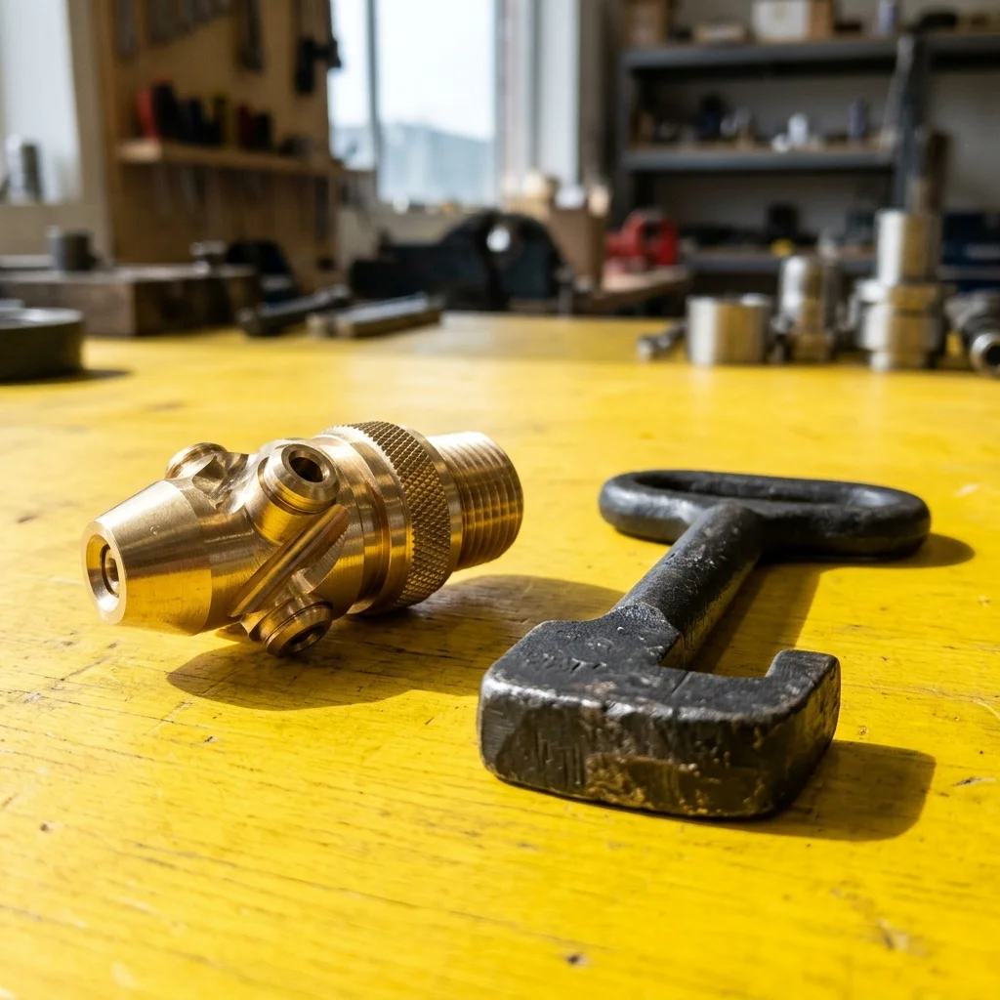
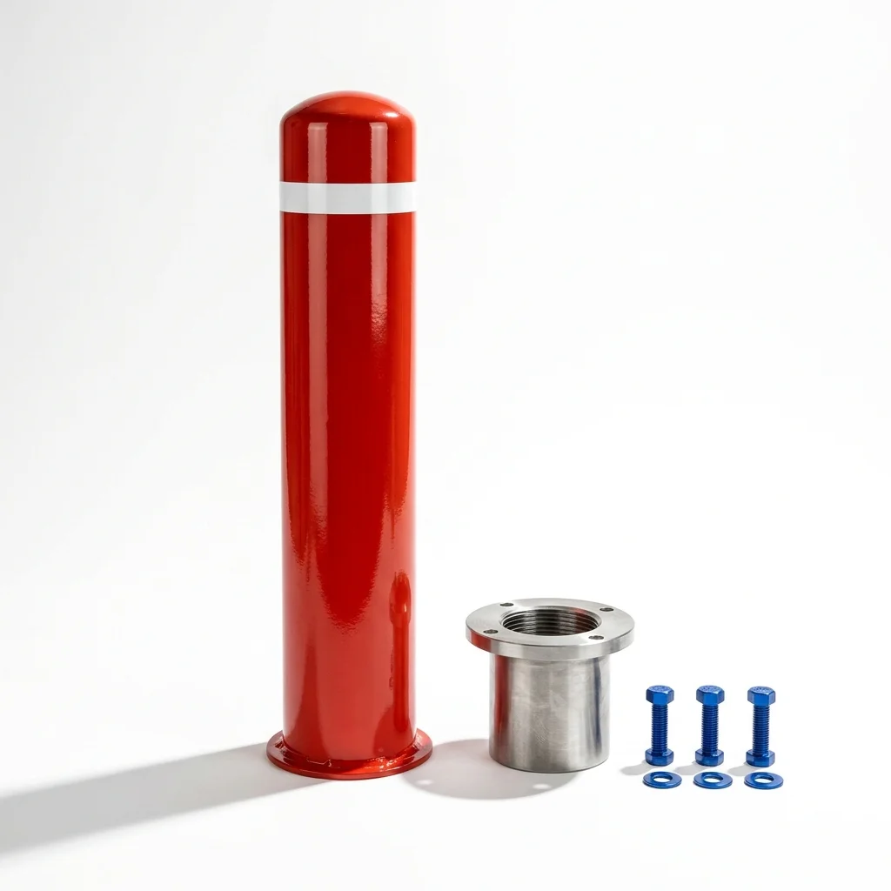

Inside The Gully-Siphon 240 Trike Rig
Serious municipal civil engineering compressed into a 1.2-metre wide active-travel envelope that leaves roads open and kerbs pristine.
Civil engineering shouldn't require twelve tonnes of cast steel and thirty litres of red diesel just to clear forty kilograms of rotting leaves out of a kerbside gully. Built inside our converted railway arch on Sloper Road in Grangetown, the Gully-Siphon 240 couples a bespoke heavy electric cargo tricycle chassis with a trailer-mounted closed-loop hydro-jetter and silt extraction cassette. It meets every Chapter 8 highway safety criterion while operating entirely within Welsh Active Travel Design Guidance dimensions.

High-Pressure Fluid Dynamics Without Diesel Clatter
A 48-volt lithium-iron-phosphate battery bank powering a ceramic-plunger triplex pump at 180 bar for six continuous hours.
The core challenge of urban kerbside drainage is power density. Conventional highway contractors mount massive industrial pumps directly to the power take-off (PTO) shafts of twelve-tonne diesel chassis because standard commercial jetting skids require immense torque to blast through calcified road silt. Our Sloper Road engineers solved this by pairing high-efficiency brushless DC motors with direct-drive triplex plunger pumps and modular lithium-iron-phosphate (LiFePO4) battery packs.
180-Bar Brass Rotary Jetting Nozzles
180 bar @ 16 L/minOur custom 3/8-inch rotary forward-cutting nozzles feature four rear-facing propulsion jets and two forward-facing offset brass orifices. When inserted into a flooded gully pot, the water pressure propels the head down through the trapped debris while spinning at 3,200 RPM, pulverising compacted sycamore root plugs, grease cakes, and washed-in road gravel without scoring the glazed clay pipe walls.
240-Litre Closed-Loop Silt & Slurry Cassette
Double-Baffled TankUnlike crude open-bucket suction rigs that spray foul sewer mist into pedestrian faces, our sealed 240-litre rotomoulded polyethylene cassette operates under continuous negative pressure. A cyclonic vortex separator pulls heavy grit, cigarette ends, and decomposed mulch into the lower settling chamber while clean aerated water passes through twin washable micron filters back to the jetter reserve tank.
48V 100Ah LiFePO4 Energy Core
6 Hours Continuous PumpingMounted low between the trike's rear drive axles for maximum stability, our 4.8 kWh lithium-iron-phosphate battery module provides steady, non-fluctuating voltage to both the Bafang M620 mid-drive motor and the high-pressure Italian ceramic plunger pump. The entire system charges overnight from standard 230V mains at our Grangetown arch, costing roughly £1.40 per full daily shift.
Cold-Pour Polymer Asphalt & Modular Sockets
Instant 40-tonne carriageway bedding and bollard resetting without diesel tarmac boilers or traffic light delays.
Traditional highway repairs take weeks because standard hot-rolled asphalt requires insulated tipping lorries that keep bitumen at 160°C, followed by thirty-tonne vibratory rollers. For a three-inch gap around a rocking gully grate, running a bitumen boiler lorry is an absurd waste of civic budget. We utilise cold-applied polymer-modified bitumen and high-early-strength polyurethane bedding resins formulated specifically for wet British weather.

Polymer-Modified Cold Bitumen Macadam
20-Min Full CurePre-mixed with elastomeric resin binders, our cold-pour aggregate reacts with ambient moisture rather than heat. We tamp it into the gully rebate using our onboard pneumatic compactor. Within twenty minutes, the surface matches the skid-resistance value (SRV) of adjacent highway tarmac and withstands continuous braking from Cardiff Bus double-deckers.
Hydraulic Bollard Truing & Socket Sleeving
12-Tonne Hydraulic RamWhen a delivery van bends a street bollard on St Mary Street, the cast iron usually fractures at pavement level or snaps the brittle mortar core. Our trailer rig carries a compact 12-tonne hollow-ram hydraulic puller. We slide a new galvanised steel receiver collar into the existing bore, seat the bollard upright, and inject rapid-expanding thixotropic structural grout that sets rock-hard before we stow our tools.
Lorry vs. Cargo Trike Operational Matrix
Direct operational comparison for municipal highway engineers, Business Improvement District directors, and harbour facilities teams.
Compare the real footprint, acoustic impact, council permitting lead time, and per-drain clearance cost between traditional twelve-tonne diesel vacuum contractors and Cardiff Kerb-Gully's agile electric cargo trikes.
| Operational Metric | Conventional 12T Suction Lorry | Gully-Siphon 240 Cargo Trike | Municipal Advantage |
|---|---|---|---|
| Street Footprint | 22.5 metres (Lorry + 30 Cones) | 1.2 metres (Trike Width) | 95% Less Pavement Space |
| Traffic Impact | Full lane closure / 3-way lights | Zero road closures / Cycle-bay fit | 100% Free Flow |
| Acoustic Noise (dBA) | 84–88 dBA (Diesel PTO Idling) | 54–58 dBA (LiFePO4 Electric) | 30 dBA Quieter |
| Permit Lead Time | 4–6 Weeks (Section 50 Notice) | Instant / Under 45 Minutes | Same-Day Dispatch |
| Average Kerbside Dwell | 120+ Minutes (Setup & Strike) | 41 Minutes Flat | 66% Faster Job |
| Tailpipe Carbon Emissions | 8.2 kg COâ‚‚ per callout | 0.0 kg COâ‚‚ (100% Electric) | Zero Local Emissions |
| Disposal Compliance | Regional Landfill / Commercial Yard | NRW Sloper Road Dewatering | #CBDU-44109-CYM Licensed |
Request a Rig Spec Sheet & Engineering Dossier
Full CAD dimensional drawings, pump performance curves, and Welsh Active Travel compliance certifications for council engineers and BID directors.